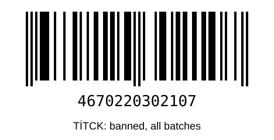
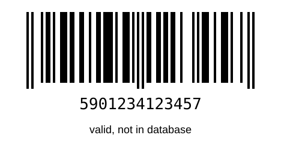

SYN · عدة التجربة على الهاتف
افتح هذه الصفحة على شاشة الحاسوب، وامسح منها بالهاتف. اجعل سطوع الشاشة عالياً، وأبعد الهاتف نحو 20 سم.
١. باركود منتج حظرته TİTCK بكل تشغيلاته

المتوقع: غير مطابق، والسبب "مشمول بإنذار رقابي لكل تشغيلاته"، مع رابط TİTCK.
٢. باركود صحيح غير موجود في القاعدة

المتوقع: غير كافٍ للحكم (معيار قبول المرحلة ٢).
٣. ملصق تجريبي (صوّره من وضع "ملصق ومكونات")
TEST SAMPLE — NOT A REAL PRODUCT
Juvéderm® ULTRA 4
Hyaluronic acid 24 mg/ml · Lidocaine 3 mg/ml · 2 x 1 ml
LOT 1005654957
MFG 02.2025 EXP 01.2027
المتوقع: شاشة "تأكد مما قرأناه". بعد التأكيد تظهر النتيجة "غير مطابق" مع "يُستخدم فقط من طبيب مختص". القراءة تستغرق نحو 15 ثانية.
٤. إدخال يدوي برقم فحص خاطئ
في خانة "أدخل رقم الباركود" اكتب: 5901234123458
المتوقع: غير كافٍ للحكم، والسبب "رقم الفحص في الباركود غير صحيح — أعد المسح".